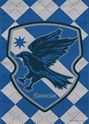

Music at JavaJam
Hogwarts students were divided into four houses:
Gryffindor
Gryffindor valued bravery, daring, nerve, and chivalry. Its emblematic animal was the lion, and its colours were scarlet and gold. Minerva McGonagall was the most recent Head of Gryffindor. Sir Nicholas de Mimsy-Porpington, also known as "Nearly Headless Nick", was the House Ghost. The founder of the House was Godric Gryffindor. Gryffindor corresponded to the element of Fire. The common room was located in one of the highest towers at Hogwarts, the entrance was situated on the seventh floor in the east wing of the castle and was guarded by a portrait of The Fat Lady. She permitted entrance if given the correct password, which was changed numerous times throughout the school year. Famous Gryffindors included Albus Dumbledore, Harry Potter, and Minerva McGonagall.
Hufflepuff
Hufflepuff valued hard work, dedication, patience, loyalty, and fair play. Its emblematic animal was the badger, and yellow and black were its colours. Pomona Sprout was the Head of Hufflepuff during 1991–1998, Sprout left the post of Head of Hufflepuff and Herbology Professor sometime before 2017 and her successor for the position of Head of Hufflepuff was currently unknown. The Fat Friar was its ghost.[4] The founder of the House was Helga Hufflepuff.
Hufflepuff corresponded to the element of earth. The Hufflepuff dormitories and common room were located somewhere in the basement, near the castle's kitchens. It could be accessed by tapping the barrel two from the bottom, middle of the second row in the rhythm of "Helga Hufflepuff" and was described as being a cosy and welcoming place with yellow hangings, fat armchairs, and underground tunnels that led to the dormitories, which had perfectly round doors, similar to barrel tops. Famous Hufflepuffs included Hengist of Woodcroft (founder of Hogsmeade), Newt Scamander (author of Fantastic Beasts and Where to Find Them), and Artemisia Lufkin (first female minister for magic).
Ravenclaw

Ravenclaw valued intelligence, knowledge, curiosity, creativity and wit. Its emblematic animal was the eagle, and its colours were blue and bronze. The Ravenclaw Head of House in the 1990s was Filius Flitwick. The ghost of Ravenclaw was the Grey Lady, who was the daughter of Rowena Ravenclaw, the House's founder. Ravenclaw corresponded to the element of air. The Ravenclaw common room and dormitories were located in a tower on the west side of the castle. Ravenclaw students must answer a riddle as opposed to giving a password to enter their dormitories. This riddle, however, could be answered by non-Ravenclaws. Famous Ravenclaws included Luna Lovegood, Gilderoy Lockhart, Ignatia Wildsmith (inventor of Floo powder), and Garrick Ollivander.
Ravenclaw

Slytherin valued ambition, leadership, self-preservation, cunning and resourcefulness and was founded by Salazar Slytherin. Its emblematic animal was the serpent, and its colours were emerald green and silver. Professor Horace Slughorn was the Head of Slytherin during the 1997–1998 school year, replacing Severus Snape, who as well replaced Slughorn as Potions Professor when he retired for the first time several years prior. Slytherin had produced the most Death Eaters and Dark Wizards, including Tom Riddle, Bellatrix Lestrange and Lucius Malfoy, for example. But that does not mean that other Houses hadn't produced any; Peter Pettigrew was a Gryffindor, and Quirinus Quirrell was a Ravenclaw. The Bloody Baron was the House ghost. The founder of the House was Salazar Slytherin. Slytherin corresponded roughly to the element of water. The Slytherin dormitories and common room were reached through a bare stone wall in the Dungeons. The Slytherin common room lay beneath the Black Lake. It was a long, low underground room with rough stone walls and silver lamps hanging from the ceiling. Famous Slytherins included Merlin, Tom Riddle, Draco Malfoy, and Dolores Umbridge.